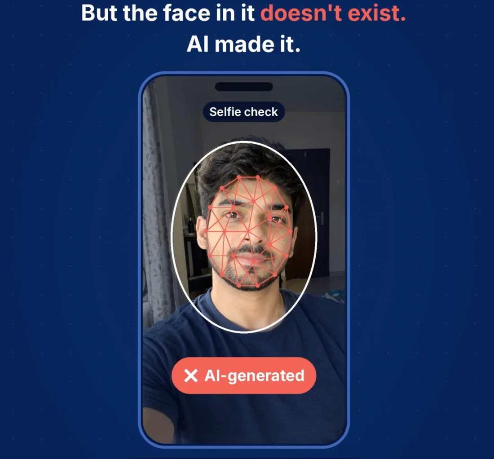
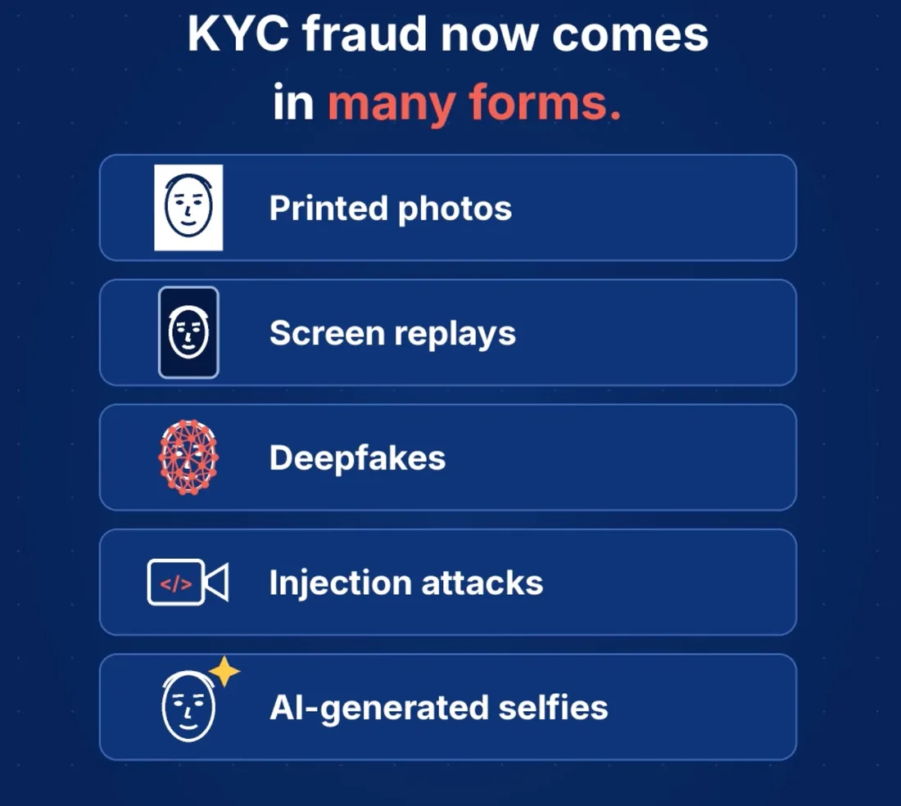
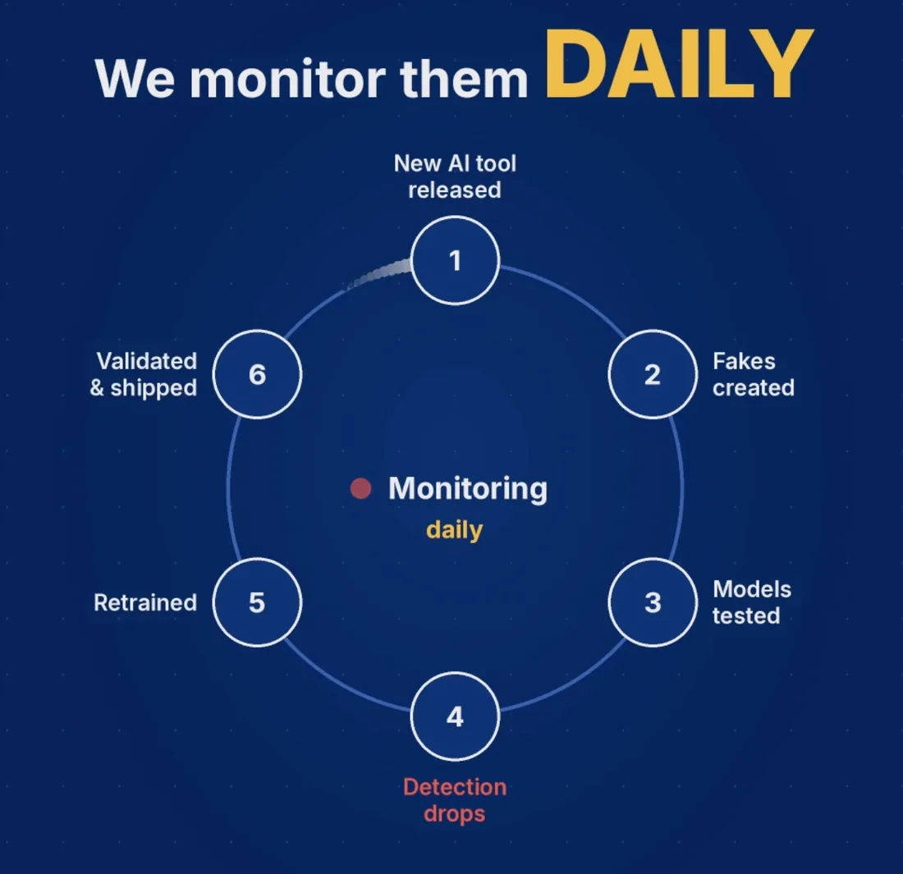

Why AI Products Are Never Done
Building fraud detection means building against an opponent who learns.
Building fraud detection means building against an opponent who learns.
Our deepfake detector was performing well. Then ChatGPT's image model changed, and our detection rate on images generated by it dropped to 79.5%.
We hadn't changed our code. We hadn't deployed anything new. There was no bug to fix and no obvious problem with our system.

The world had simply moved on.
This is one of the things I've found most interesting about building fraud detection at Digio. In traditional software, once a feature works, it generally keeps working unless something around it changes.
Fraud detection is different. The people trying to get past your system are constantly finding new ways to do it.
Our model hadn't broken. The fraudsters had moved on.
Think about how selfie fraud has evolved.
Initially, someone might hold a printed photograph in front of a camera. Detection systems get better at catching it, so attackers try replaying a photograph or video on another screen. Systems adapt again.
Then come more convincing deepfakes and AI-generated faces.
Each time detection improves, some attacks become harder to pull off. But that doesn't mean the attempts stop. People trying to get around the system look for another way in.
This is what makes fraud detection different from many other prediction problems.
A weather forecast doesn't change the weather. Predicting rain tomorrow doesn't influence whether clouds form.
A fraud detection model is different because its predictions and decisions influence the behaviour of the people trying to defeat it. The better we get at catching one kind of fraud, the more incentive attackers have to try something else.
Researchers describe a related phenomenon as performative prediction: a prediction system can change the very behaviour it's trying to predict.
In fraud detection, this creates a moving target. We improve the model, attackers adapt, and the test results that looked reassuring yesterday may tell us much less about the threats we face today.
The uncomfortable part is that the model can be working exactly as designed and still become less effective.
In traditional software development, the process is relatively straightforward. Build a feature, test it, release it, and move on to the next problem.
Of course, software still needs maintenance. But a login page doesn't usually become less effective because someone has developed a new way to fool it.
Fraud AI has a different lifecycle. Shipping the model starts another round of work.
At Digio, we can't establish model performance once and assume it will hold indefinitely. We need to keep testing against newer AI image-generation tools, watch for drops in detection performance, and retrain and validate models when necessary.
Even then, getting a better model is only part of the job. Releases need to be managed carefully, with versioning, appropriate approvals and communication with clients before changes go live.
There's also a more basic challenge: not all fraud attempts are the same.
Detecting a printed photograph, a replayed video and an AI-generated face involves different signals. If we treat them as one broad problem, we risk missing where the model is actually struggling.

The same goes for measurement. An overall detection rate can look healthy while performance against a particular type of attack is deteriorating. Unless we break down the results, we might not even realise where the problem lies.
This is where model governance becomes important. The RBI's draft guidance on model risk management reflects a broader shift towards ongoing monitoring, validation and controlled changes to models.
The idea is straightforward: a model shouldn't be treated as something we build, deploy and forget.
Once it goes live, the nature of the work changes. We're no longer just building the model. We're making sure it continues to do its job.
The changing behaviour of fraudsters is only half the challenge. The other half is figuring out how long it will take to build a better model.
In conventional software development, estimates are rarely perfect, but previous projects give us a starting point. If we've built a similar integration before, we have some idea of the effort involved.
AI development often starts somewhere else entirely. We're testing a hypothesis, and we don't yet know whether the approach will work.
For example, we might not have enough representative fraud samples to train or evaluate a model properly. Before improving detection, we may first need to figure out how to collect or generate useful data.
Or a model might perform well on our test dataset but behave very differently when exposed to real users and real-world conditions.
Even when detection improves, there's another trade-off to consider. We want to catch more fraudulent attempts without unnecessarily rejecting genuine customers. Improving one metric at the expense of the other doesn't necessarily make the product better.
Finding the right balance can take several rounds of experimentation.
And the model itself is only one part of the timeline. External lab testing, client sign-offs and compliance reviews introduce dependencies that the team can't always control.
All of this makes estimation harder than it is for many conventional software projects.
When someone asks me how long a model improvement will take, the honest answer is sometimes that we need to see what we learn in the first week.
That doesn't mean planning is pointless. It means the first milestone may be about establishing whether an approach is worth pursuing, rather than promising a finished solution by a particular date.
Sometimes, the most useful outcome of an experiment is discovering early that we're solving the wrong problem.
You can't eliminate the uncertainty. But you can change how you work with it.
A few practices have become particularly important in this kind of environment.
Give an approach a defined window to demonstrate its potential. At the end, decide whether to continue, change direction or stop.
Not every experiment needs to produce a better model. Sometimes, ruling out an approach saves the team weeks of effort later.
A new model can run in shadow mode, evaluating incoming cases without influencing the decisions made by the live system.
This gives us a chance to compare its behaviour with the existing model and catch problems before the change affects customers.
When evaluating two models, we need to use the same test dataset and decision threshold. Otherwise, an apparent improvement might come from changes in how we're measuring performance rather than from a genuinely better model.
This sounds basic, but it's essential. If the evaluation conditions keep changing, it's difficult to know whether the model is actually improving.
When the outcome is uncertain, a single delivery date can create a false sense of confidence.
It's more useful to separate the work into stages: an initial experimentation window, clear criteria for deciding whether to proceed, and a checkpoint to reassess the timeline based on what we've learned.
As the team gathers evidence, the estimate becomes more reliable. We don't need to pretend we know everything upfront.
If attack methods keep evolving, we shouldn't wait for a major drop in performance before thinking about retraining.
Monitoring, evaluation and revalidation need to happen continuously enough to identify when a model is losing effectiveness. Retraining should follow when the evidence supports it, with clear release criteria and appropriate governance.

And a better result in an experiment doesn't automatically justify a production release. The new model still needs to meet the standards we expect of any change to a live system.
None of these practices makes AI development as predictable as conventional software development.
They make the uncertainty easier to manage.
Building fraud detection means dealing with two kinds of uncertainty at the same time.
The first is that the world keeps changing. A model that works well today might struggle tomorrow because the methods used to defeat it have evolved.
The second is that we don't always know how to build the next, better model. We have to experiment, learn from the results and sometimes abandon approaches that initially looked promising.
For a product manager, this changes the nature of the job.
It's not just about defining a feature, aligning a team and getting something shipped. It's about building a product that can keep adapting without compromising reliability, customer experience or the controls expected of a production system.
That can be frustrating. There isn't always a clear roadmap from problem to solution, and shipping something doesn't necessarily mean the problem is solved.
But I find this one of the most interesting parts of working in AI.
You're not building against a static problem. You're building against an opponent who learns.
And that changes what it means to finish the job.
The day our fraud model is truly finished is the day we stop expecting fraudsters to get better.